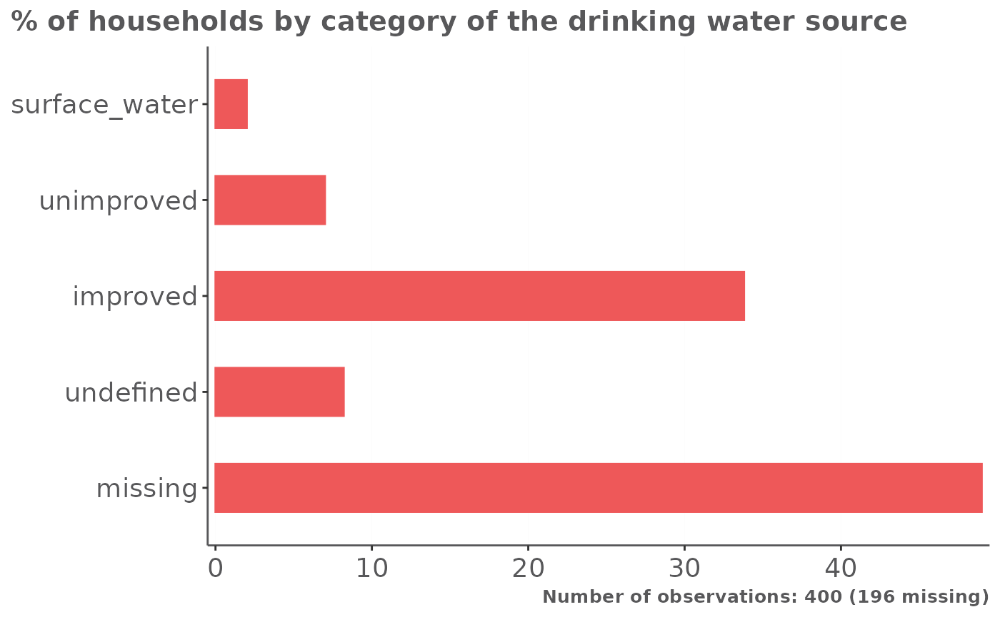
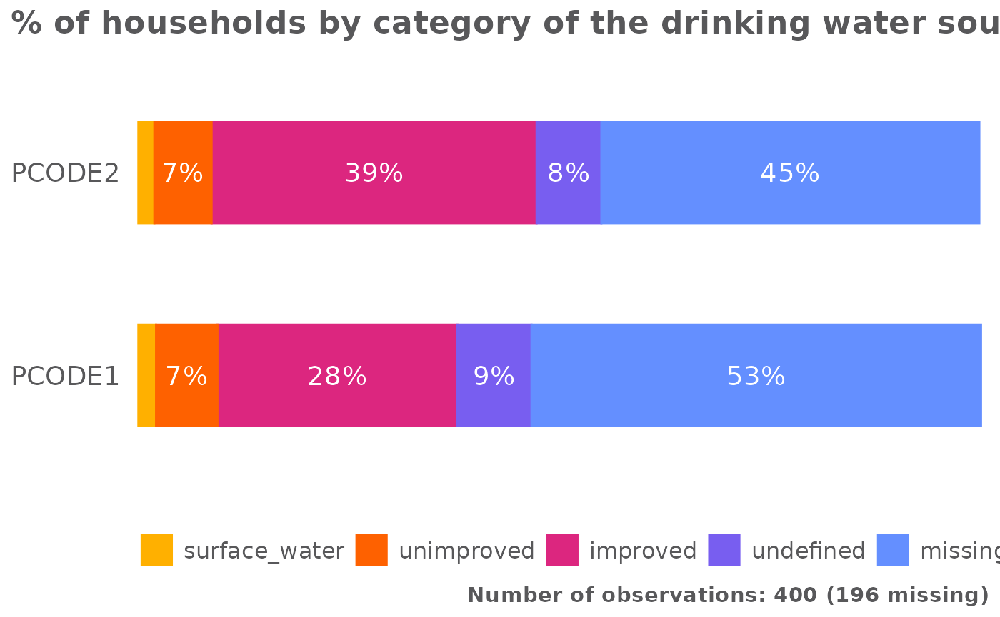

Installattion requirements
If impactR.analysis, impactR.kobo, and
impactR.viz are not installed, you can install it like
so:
# pak::pak("gnoblet/impactR.analysis")
# pak::pak("gnoblet/impactR.kobo")
# pak::pak("impact-initiatives-hppu/impactR.viz")Load libraries an files
Load packages:
Load and prepare data, and add indicators:
main <- humind::dummy_raw_data$main
main$weight <- 1
# Add all indicators needed (eventually this will be done in a one line pipe)
main <- main |>
# Demographics
add_hoh_final() |>
add_age_cat("resp_age") |>
add_age_18_cat("resp_age") |>
add_age_cat("hoh_age") |>
add_age_18_cat("hoh_age") |>
# WASH
add_sanitation_facility_cat() |>
add_sharing_sanitation_facility_cat() |>
add_sharing_sanitation_facility_num_ind() |>
add_drinking_water_source_cat() |>
add_drinking_water_time_cat() |>
add_drinking_water_time_threshold_cat() |>
# SNFI
add_shelter_type_cat() |>
add_shelter_issue_cat() |>
add_fds_cannot_cat() |>
add_occupancy_cat()
# Make it a survey design (IRL please use your survey design)
main <- srvyr::as_survey_design(main, weights = "weight", stratum = "admin1")Now we load the kobo tool and data analysis plan:
survey <- humind::survey_update |>
rename(label = label_english) |>
split_survey(type)
choices <- humind::choices_update |>
rename(label = label_english)
analysis_dap <- humind::analysis_dapAnalysis
# Run the analysis
an <- impactR.analysis::kobo_analysis_from_dap(main, analysis_dap |> filter(dataset == "main"), survey, choices)
# If we want a grouped analysis by admin 1
an_ad1 <- impactR.analysis::kobo_analysis_from_dap(main, analysis_dap |> filter(dataset == "main"), survey, choices, group = "admin1")Visualization of results
Simple bar graphs
Let’s do one quick viz:
# Drinking water sources for the whole country
var_to_plot <- "wash_drinking_water_source_cat"
# Filter the analysis results
an_plot <- an |>
filter(var == var_to_plot)
# Get title, total number of observations and number of missing values
title_to_plot <- an_plot$indicator |> unique()
n_tot_plot <- an_plot$n_tot |> unique()
na_count_to_plot <- an_plot$na_count_tot |> unique()
# Bar plot
an_plot |>
mutate(
stat_r = round(stat*100, 1),
var_value_na = factor(ifelse(is.na(var_value), "missing", var_value), levels = c("missing", "undefined", "improved", "unimproved", "surface_water"))
) |>
bar(
x = "var_value_na",
y = "stat_r",
add_text = F,
title = title_to_plot,
theme_fun = theme_reach(title_size = 12),
caption = paste0("Number of observations: ", n_tot_plot, " (", na_count_to_plot, " missing)"))
Let’s do one quick viz for the grouped analysis at the admin 1 level:
# Drinking water sources for the whole country
var_to_plot <- "wash_drinking_water_source_cat"
# Filter the analysis results
an_ad1_plot <- an_ad1 |>
filter(var == var_to_plot, group_key == "admin1")
# Get title, total number of observations and number of missing values
title_to_plot <- an_plot$indicator |> unique()
n_tot_plot <- an_plot$n_tot |> unique()
na_count_to_plot <- an_plot$na_count_tot |> unique()
# Stack bar plot
an_ad1_plot |>
mutate(
stat_r = round(stat*100, 1),
var_value_na = factor(ifelse(is.na(var_value), "missing", var_value), levels = c("missing", "undefined", "improved", "unimproved", "surface_water"))
) |>
bar(
x = "admin1",
y = "stat_r",
group = "var_value_na",
position = "stack",
add_text = T,
add_text_color = "white",
add_text_threshold_display = 5,
title = title_to_plot,
theme_fun = theme_reach(
grid_major_x = FALSE,
axis_x = FALSE,
axis_ticks_y = FALSE,
legend_direction = "horizontal",
legend_position = "bottom",
title_size = 14),
caption = paste0("Number of observations: ",
n_tot_plot, " (", na_count_to_plot, " missing)"))